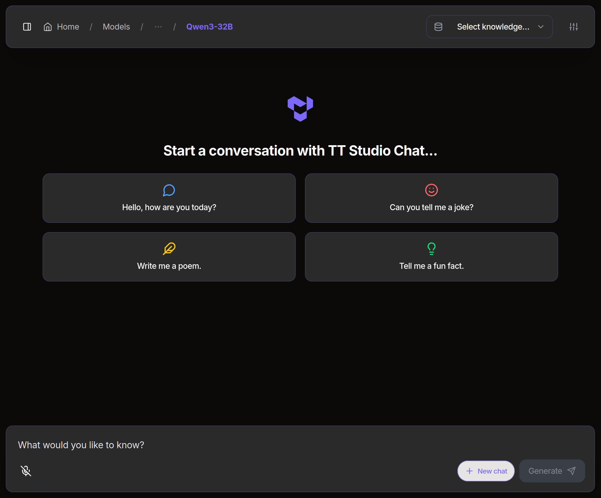

Run Local AI on your Tenstorrent hardware.
AI model management in an easy-to-use GUI. Privately run LLMs, voice agents, image/video generation and more without paying for tokens.

$ tt-studio
Have a Tenstorrent card? Follow the setup instructions in the GitHub repo.
Everything you need to deploy, chat with, and build on AI models, running privately on your own Tenstorrent hardware.
tt-studio handles Docker, your env, and the whole stack.More open-source tools from Tenstorrent.